远观，或靠近。
单列瀑布流、4 格、9 格与沉浸单图。App 内双指缩放，视角连续变化，始终留在那张照片附近。
PHOTOS / FLUID BROWSING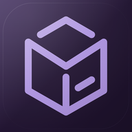
Mne·每一份记忆，都是命运轻轻的印记。
照片是回忆的载体，选择你想留住的故事。
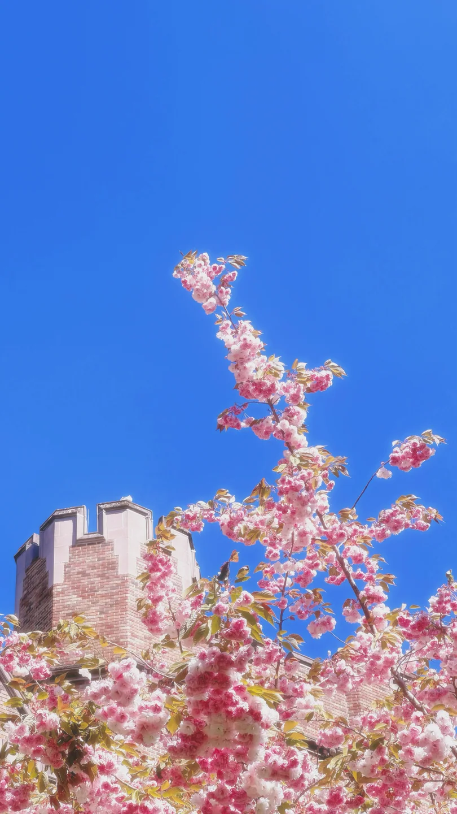
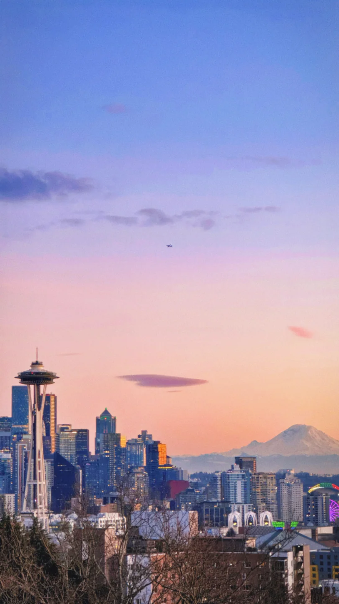
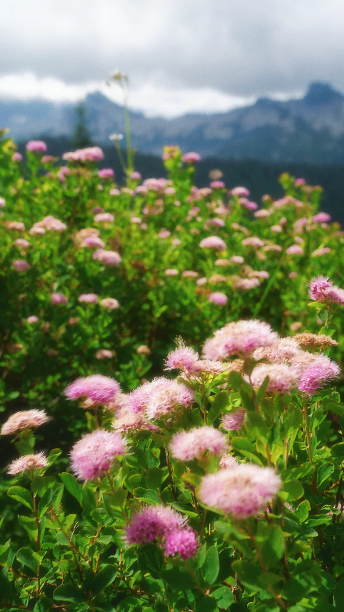
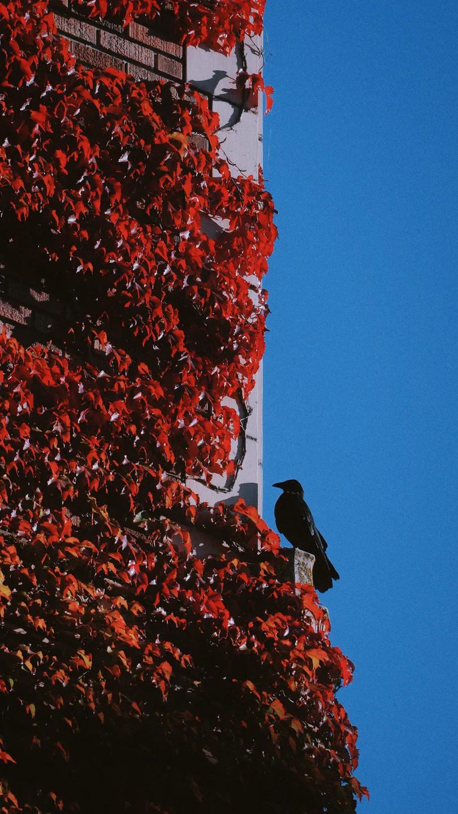
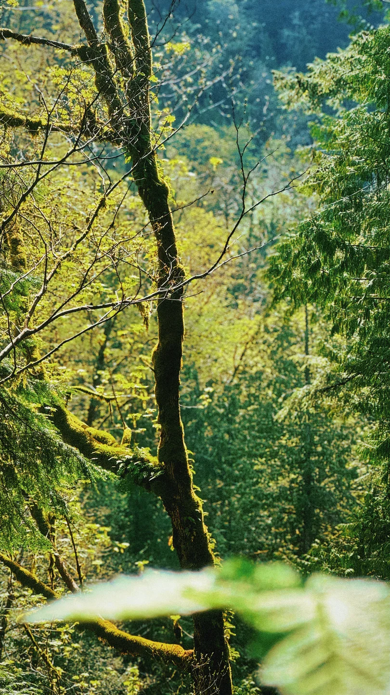
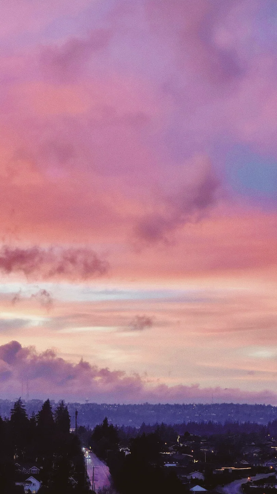
关于去留，你比任何算法都懂。
Mne，取名自记忆女神 Mnemosyne。
整理不是抹去，而是为真正重要的瞬间，留出空间。回望本身，也是人生的过程。
把 M、N、E 折成一只盒子。收起照片，也收起光落下的那一刻。
让散落的片段各得其所，让彼时的自己，在留白里慢慢清晰。
少一点操作，多一点感受。
向下滑动，回忆会自己展开。
滚动演示 · App 内使用手势操作
单列瀑布流、4 格、9 格与沉浸单图。App 内双指缩放，视角连续变化，始终留在那张照片附近。
PHOTOS / FLUID BROWSING左右重温，上滑暂存回收站。长按预览，横向扫选，把喜欢的瞬间加入 Mne Archive。
GESTURES / YOUR INTUITION暂存的照片，随时可以恢复。真正删除前，由 iOS 再次确认。让每个选择，都从容一点。
TRASH / ROOM TO RECONSIDER那些整理时的小麻烦，值得被认真解决。
藏起整理过的，认出正在看的。
常用的动作，就在手边。
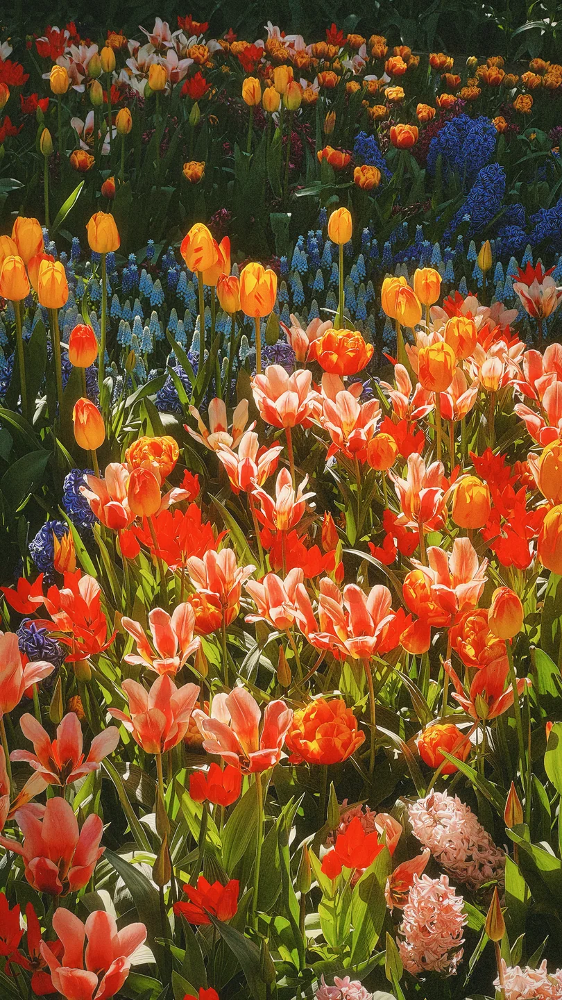
已归档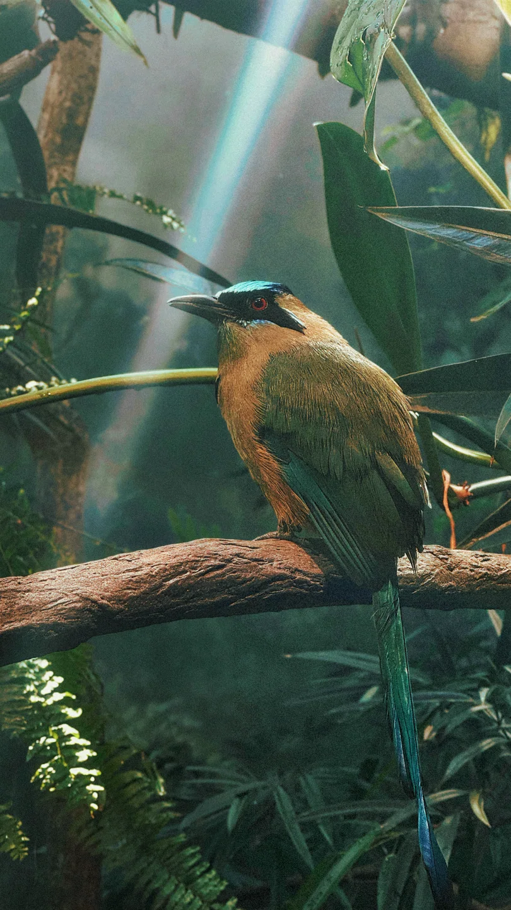
一键隐藏收藏及已加入相册的照片，专注还没整理的回忆。随时关掉开关，让它们重新出现。
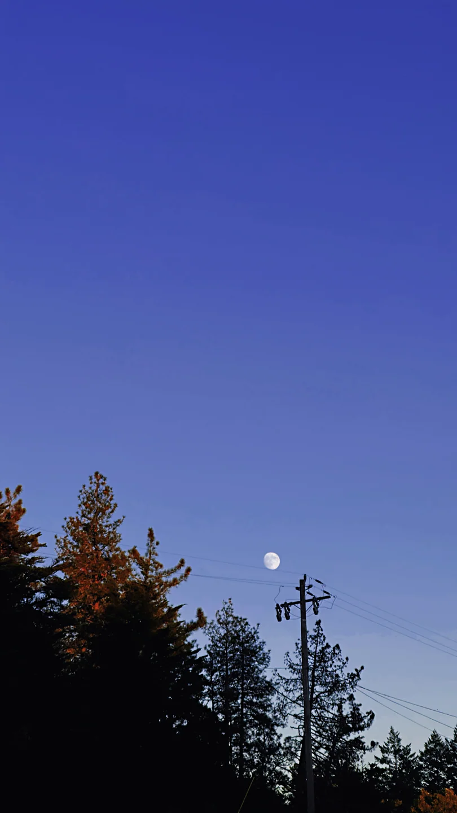
分辨率、拍摄时间、所在相册，收在简洁的信息里。看清照片，也看清它已经属于哪段故事。
长按照片，直接添加到归档或最近使用的相册。让常用的去处就在手边，少几次跳转，多一点连贯。
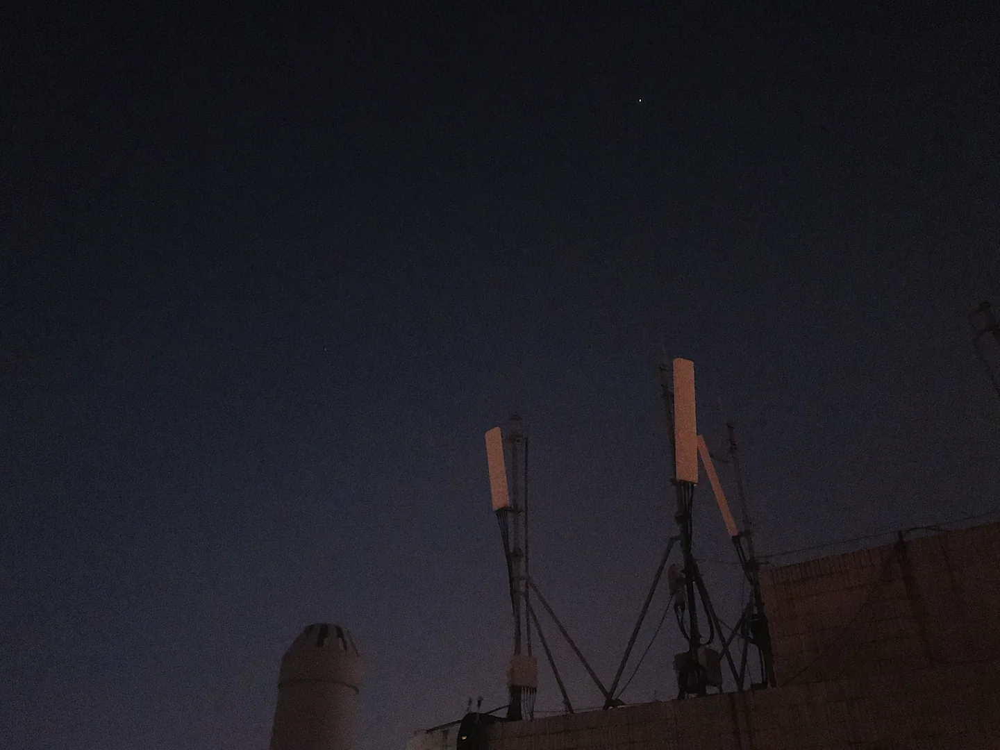
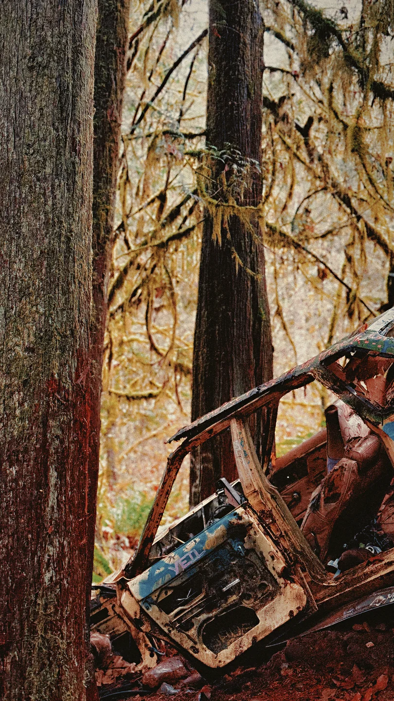
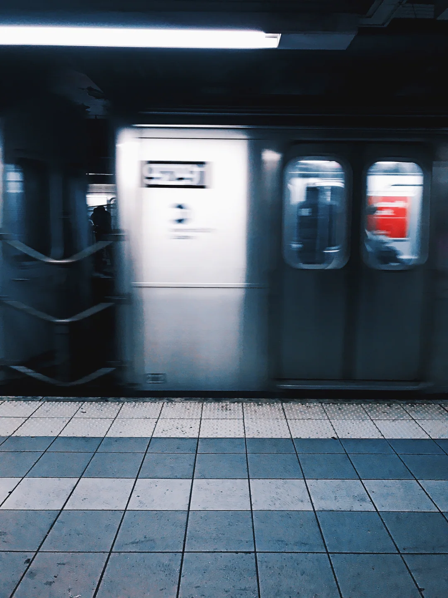
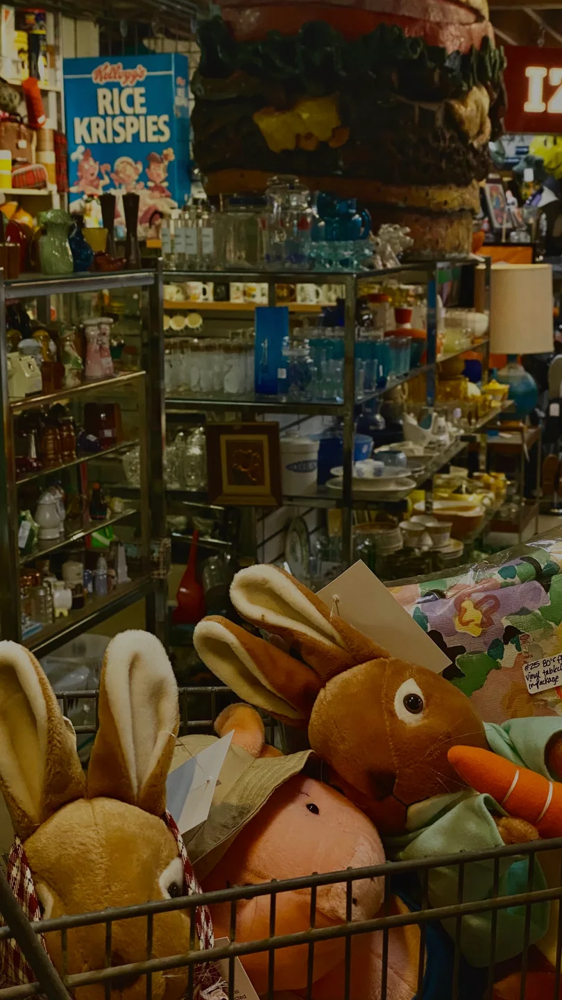
自适应原比例，或选择 9:16、4:6。照片完整地留在画面里，让瀑布流顺应你的浏览节奏。
可交互的界面示意 · 相册与操作仅作演示
回忆，是铸就我们人生的碎片。
收集卡片，解锁成就，让整理也成为一场回到过去的历险。
在重温与选择之间，发现新的乐趣，也重新认识自己。
上下滑动翻阅 · 也可左右轻扫卡片
故事仍在生长。新的碎片，会随 Mne 一起到来。
时间留下轨迹，你留下故事。
回忆图谱，把照片的拍摄日期织成时间的轮廓。按周、月或年，重看那些平静的日常，和格外丰盛的季节。
按 App 原始组件布局与几何还原 · 数据仅作示意
仍保存的照片与视频 · 按拍摄日期
轻触或拖动，查看日期与回忆数量
图表与统计为示例数据；实际空间释放取决于 iOS 与 iCloud。
照片和视频不上传到 Mne 服务器。不登录，也可以离线整理。私人内测登录只备份资料与本机整理元数据。
明亮、暗夜、梦幻紫、青灰与 OLED nerd。五种主题，中文与英文。一个始终熟悉的整理空间。
为 iPhone 打造。真实的系统材质、轻柔的触觉与克制的动效。支持系统减少动态效果，让节奏由你掌握。
一个关于记忆的 App，也有自己的记忆。
A LITTLE LESS. A LITTLE MORE YOU.
Mne 正在私人内测中。
从浏览开始，把回忆慢慢整理成喜欢的样子。